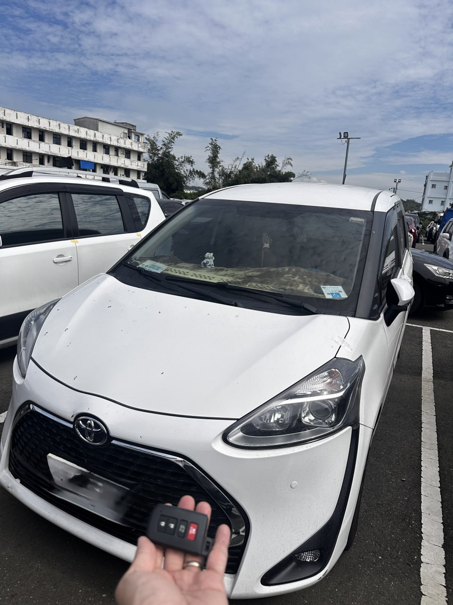

實戰現場：彰化和美，執行 Sienta 智能系統快速匹配與鑰匙新增
靈活空間神車：備份鑰匙是全家安心的保證
Toyota Sienta 以其優異的空間機能與側滑門設計，成為台灣家庭與商務的首選車款。其搭載的智慧感應系統（Smart Entry & Push Start）雖然便利，但若僅存一支鑰匙，一旦發生遺失，全丟救援的成本與時間將大幅增加。
在彰化和美現場，我們為客戶執行了快速的「備份鑰匙」匹配服務。透過專業 OBDII 讀取技術，在不拆解任何內裝的情況下，成功同步全新智能鑰匙數據，讓客戶在最短時間內獲得第二份啟動保障。
免拆快速匹配
專用設備對接，30 分鐘內完成系統同步，保留原廠所有遙控與感應功能。
全方位遠征
極致核心 ProCore 覆蓋中彰投，彰化和美地區可享快速到府/展間服務，無需預約排隊。
需要 Toyota 備份或全丟救援？
立即連繫職人：0909-277-670